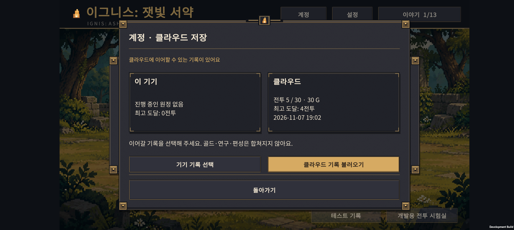
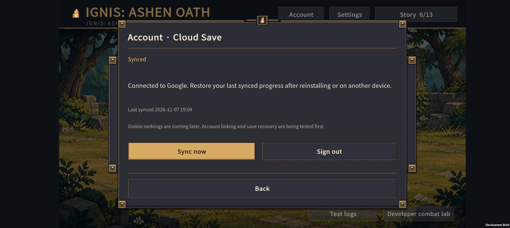

IGNIS: ASHEN OATH / 2026-11-07 / v0.72
게스트로 시작하고,
Google 계정으로 기록을 이어가기.
홈에 계정 화면을 추가했습니다. 로그인하면 원정·도감·기록을 서버에 보관하고, 같은 계정에서 복구할 수 있는 기반입니다.
상세 개발 기록
| 상태 | 동작 |
|---|
| 게스트 | 로그인 없이 기존 로컬 저장으로 플레이 |
| Google 연결 | Android 계정 선택 창 → 서버 기록 확인 → 백업 또는 복원 선택 |
| 오프라인 | 기기에 저장하고 연결 회복 후 재시도 |
| 기기·서버 기록 충돌 | 전투·골드·최고 기록을 비교하고 하나 선택. 재화 합산 없음. |
| 로그아웃 | 현재 기기의 원정 유지 |
복구 범위는 마지막으로 서버 저장에 성공한 기록입니다. 게스트 진행이나 오프라인의 미전송 진행까지 복구되지는 않습니다. 연구는 새 원정에서 초기화되는 기존 규칙을 유지합니다.
덮어쓰기보다 기록 보존을 우선
기기 시간이나 더 높은 점수로 최신 기록을 고르지 않습니다. 마지막 공통 저장 버전과 내용으로 판단하고, 다른 기기에서 바뀐 기록은 서버의 버전 잠금으로 덮어쓰기를 막습니다. 불러오기 전에는 기존 기기 기록도 별도로 보관합니다.
연결과 검증
- Unity development 환경과 Google 외부 테스트 앱 연결.
- 동기화 142개, 기존 로컬 저장 150개, 번역 4,886개 검사 통과.
- Unity JSON·저장 호환·한영 계정 창 배치 32개 검사 통과.
- 실제 서버에서 합성 계정의 인증·저장·읽기·오래된 버전 덮어쓰기 거부 통과.
- Buddy2: 사용자 Google 로그인과 첫 서버 저장 성공.
- 기기 진행을 비운 임시 상태에서 서버 기록 복원. 원래 5전투·30골드·기록 4개의 저장 본문 8,968바이트와 완전히 일치.
Google 인증 세션을 유지한 복구 시험입니다. 앱 완전 삭제 후 새 세션으로 재로그인하는 시험과 두 물리 기기 동시 사용은 아직 남아 있습니다. 현재 기기는 원래 진행과 한국어 설정을 유지합니다.

빈 로컬 상태를 만들어 확인한 복구 시험. 기존 기록은 미리 백업했습니다.

다음 단계
온라인 순위는 아직 구현하지 않았습니다. 클라이언트 백업을 점수 검증 자료로 사용하지 않고, 서버 검증과 점수 제출을 따로 연결해야 합니다.
출시 전에는 두 기기의 최초 동시 업로드 보호, 계정 삭제, 개인정보 안내, 출시 인증서, 장시간 오프라인·재설치 검증과 무료 한도 감시가 필요합니다. 현재 Google OAuth는 테스트 상태이며 유료 서비스나 결제 수단을 새로 등록하지 않았습니다.